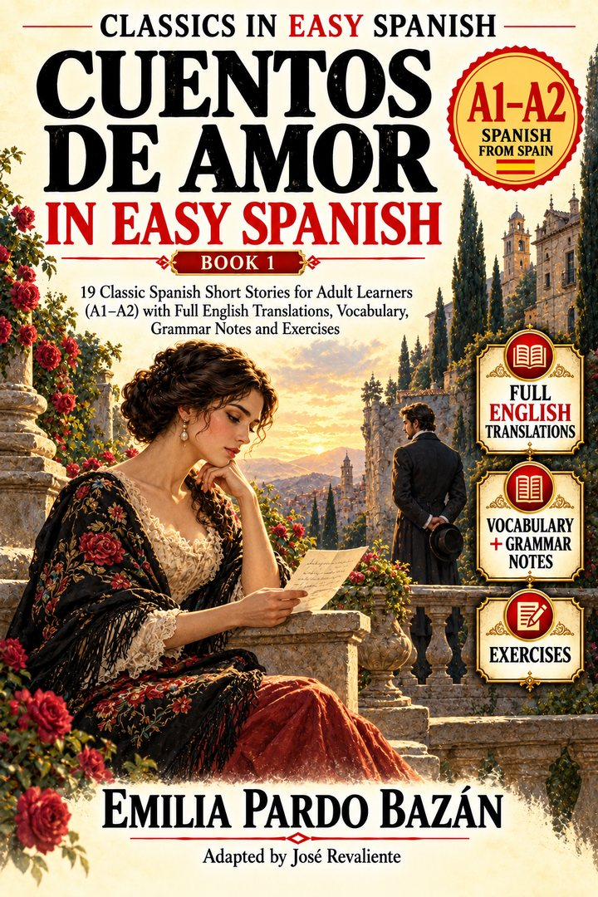

DE AMOR
BOOK 1 · A1–A2
EMILIA PARDO BAZÁNClassics in Easy Spanish · Reader companion
Cuentos de amor in Easy Spanish
BOOK 1 · A1–A2 · SPANISH FROM SPAIN
19 classic short stories for adult learners. Stream the Spanish narration and use the downloadable learning resources.
Emilia Pardo Bazán
Adapted by José Revaliente

Spanish audio — 19 stories
The audio is hosted on Internet Archive. Each track follows the 19-story Book 1 reading order. Availability depends on the external host.
Reading and study downloads
152 source-grounded Story Words entries.
Vocabulary CSV →152 cards, TSV for Anki.
Anki / Flashcards →19 story arcs with reading questions.
Conflict Timeline →Central figures and pressures in each tale.
Character & Conflict Map →19 reading files, A4 PDF.
Printable Reading Companion →19 reading worksheets.
Print from browser →Book companions: Read first, listen, then use the cards and maps. The full English translations are in the book, not reproduced here.
Reading-level guidance
A1–A2 is an editorial supported-reading range; the central reading experience is A2 with support. It is not official CEFR certification.